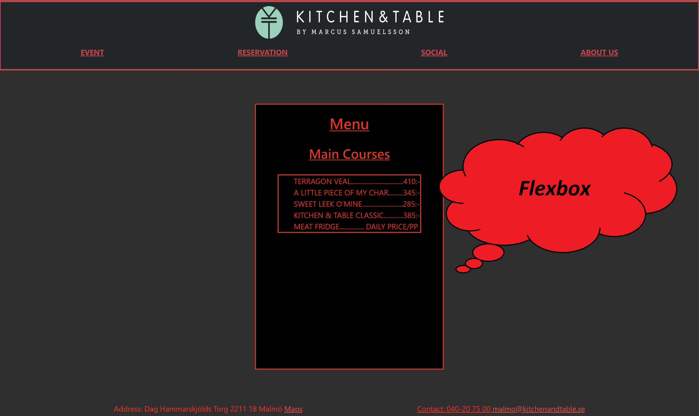
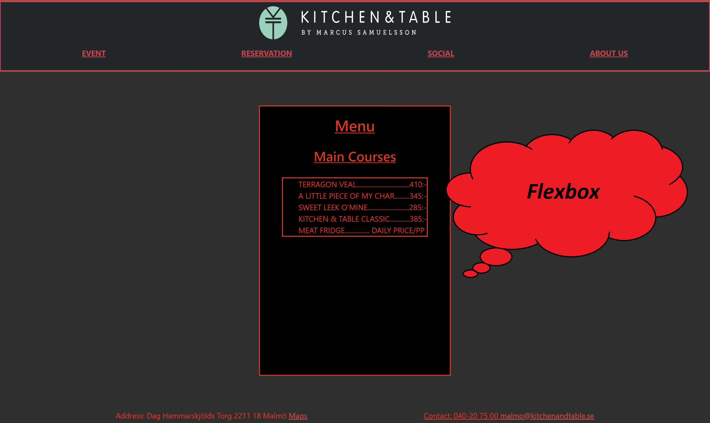

Projekt-4
Detta är mitt andra miniprojekt inom html-css där jag haft som uppgift att använda bootstrap för navbar samt att göra huvudinnehållet med flexbox för att “göra om” en restaurangs hemsida. På bild ett kan man se navbar med länkar och logo. På bild två har jag använt mig av flexbox. På bild tre kan man se att jag gjort fungerande länk till maps som visar korrekt position till restaurangen samt gjort en länk till mail.
 
